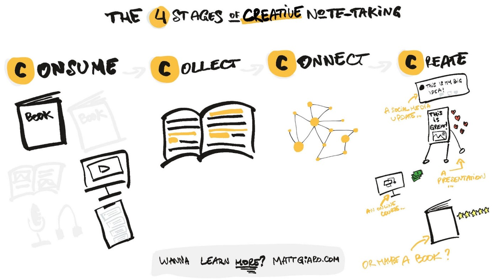

How to get notes?

Everyone’s taking notes. But only a minority take notes in a useful way.
Today, you’ll discover my 4-step Process for taking useful notes.
Notes that you can be proud of.
Notes that will help you grow.
Notes that you can use to generate better ideas and content online.
If you can replicate this process, you’re much less likely to merely “save notes” without revisiting
them and much more likely to start learning and growing from the content you consume.
The problem is that most people don’t have any process at all for taking better notes. This is why
they are constantly saving a bunch of “information” without doing anything with it.
Let’s dive in.
You are what you consume
Information is like food.
You’re more likely to be healthy and in shape if you consume rich-nutrient food rather than
over-processed meals. Information is no different. At the top of the funnel of every note-taking
system comes the intake. So if you want to take better notes, you need to regulate your information
intake.
It’s all about being intentional about what you consume. Because your input influences your output.
As programmers say: “Garbage in, garbage out.”
If you’ve been struggling with too much information to deal with, then regulating your intake is the
first step towards getting back your mental sanity.
In today’s Information Age, it’s not much about what you consume but more about what you ignore.
Once you’ve identified the right information to consume, comes the next part: Collection.
Collecting everything in one place
There are thousands of places where you could store your notes.
On the cloud, on your phone, across different apps. While the abundance of choices seems to be a
luxury, it often ends in a curse.
Why? Meet your enemy: Scattered notes.
The more scattered your notes are, the more time you’re going to waste in retrieving them. But
that’s just the tip of the iceberg. You not only waste valuable mental bandwidth retrieving them,
but also in writing them down in the first place.
Research has shown that too many choices are counterproductive.
Why? Because it triggers analysis-paralysis. We have so many choices that we don’t make any.
The same goes for the multitude of apps out there.
Collecting everything in one place is the key to starting to get an overview and processing your
notes in a meaningful way.
Saving ideas is a waste of time — start connecting them
Your ideas are the sum of what you’ve consumed in the past.
When sleeping or being bored, your brain creates connections between all the ideas. For too long,
people classified their notes in folders or using tags. While it seems to make sense on paper, this
Process prevents you from making meaningful connections and coming up with great ideas.
This is why tags and folders don’t work.
If you’re looking to spark creative insights, find new solutions, and stand out, you want to mimic
the way your brain comes up with ideas and transplant it into your note-taking system.
Enter: backlinks
Backlinks are how you connect your notes between them. It’s the next generation of effective
note-taking.
To create great backlinks, simply ask yourself one question: What does the note I just took remind
me of? Link the relevant note. Done.
Creating value for others
Ideas are meant to be shared.
If you’re like me, you enjoy discovering and sharing knowledge and insights. This is why I’m a
content creator. And there’s a saying I learned from old-school monotheist scholars stating that
“Money grows by saving, but knowledge grows by sharing.”
Did you ever have to create a presentation or explain what you’ve learned to someone else?
Nobody wants to look stupid. That’s why when teaching and sharing, our retention rate goes through
the roof.
This is why useful note-taking is also about creating something meaningful for others.
To recap, here are the 4 stages of effective note-taking:
1. Consume
2. Collect
3.Connect
4. Create
Implement them in your workflow, and your notes will never be the same.